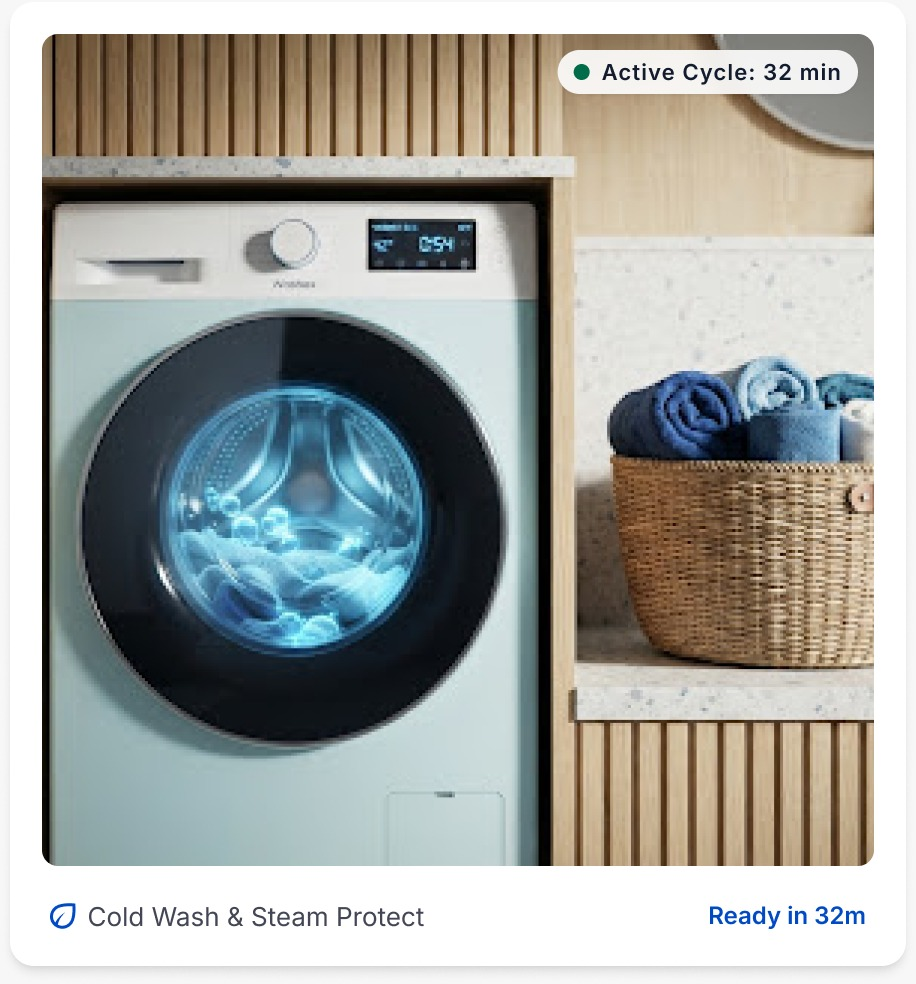

CAMPUS GARMENT CARE
Dependable and efficient garment treatments designed for your busy campus routine.

Regular wash and deep cleaning using balanced temperature profiles for everyday clothes.
✓ Controlled temperature
✓ Hygienic washing cycle
Careful specialized cleaning for delicate, formal and sensitive garments.
✓ Non-toxic cleaning
✓ Individual fabric inspection
Clean and wrinkle-free clothes using professional steam ironing.
✓ High-pressure steam
✓ Crisp collars and alignment
Neatly folded clothes organized by bundle and sealed for easy collection.
✓ Sorted clothes
✓ Easy collection
Deposit your laundry at your assigned campus locker.
Your laundry is tagged for easy tracking.
Our team washes, dries and irons your clothes.
You receive an alert when your laundry is ready.